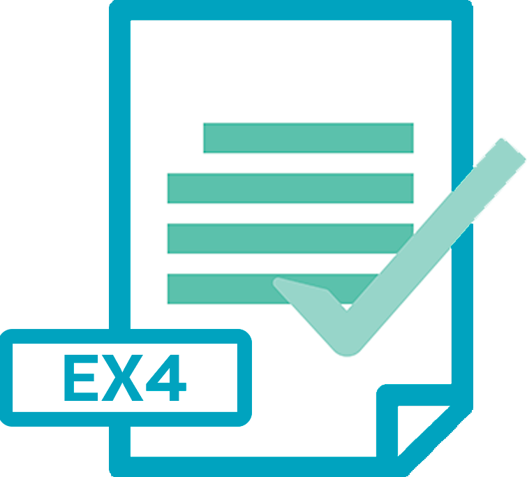

Solusi Cerdas Untuk Trader Sukses
Indikator Orion memudahkan anda untuk menentukan timing entry yang paling tepat, pasang sekarang dan raih keuntungan dengan lebih cepat
{kind=link}


Masih zaman trading terjebak signal palsu?
Atau terlalu banyak pakai indikator yang bikin analisis makin rumit dan membingungkan? Ujung-ujungnya salah entry posisi..
Tenaga & pikiran terkuras, hasilnya masih loss sampai ribuan dollar
Trading gak konsisten karena gak sesuai rule/plan entry
Putus asa, akhirnya cutloss karena floating gak beres-beres
Ikut signal abal-abal lossnya kebanyakan
Stress lihat akun yang tak kunjung profit
Stop buang-buang waktu, uang dan tenaga! Trading bukan sekedar coba-coba
Sekarang waktunya pakai..
Indikator by Orion System
Pilihan tepat untuk anda yang masih bingung cari alat bantu trading yang akurat. Pasang ke akun anda dan rasakan manfaatnya segera!
Beli Indikator
Beragam kemudahan analisa bisa Anda dapatkan menggunakan Indikator Ampuh satu ini
- Mempermudah identifikasi tren harga di masa depan
- Memberikan akurasi signal buy/sell untuk keputusan transaksi yang lebih baik
- Kemudahan menentukan level support/resistance juga area entry dan close
- Memberikan informasi harian kapan anda harus mulai transaksi di market
- Indikator Orion bantu memfilter dan memfokuskan titik signal yang paling penting
- Menyediakan visualisasi data pasar dengan lebih baik
Manfaatkan Waktu Sekarang! Sebelum Harga Normal
Jangan sampai terlambat lagi entry! Pasangkan Indikator Orion di akun anda sekarang juga
Full-Pack
IDR 1.000.000,-
IDR 400.000,-
- Bisa digunakan di 5 akun real
- Unlimited Demo Account
- 1 Tahun Indikator Akses
- Gratis Update
- Unlimited Pair
- 2 Pilihan Fitur (Follow Trend & Counter Trend)
- Forum Diskusi
- Video Training
- Custom Setting
- MT4 & MT5 Free Update
Masih Ragu? Coba Aja Dulu
Dapatkan trial selama 7 hari, GRATIS!
Hubungi Kami Untuk Dapatkan File Trial Indikator Orion System
- Pantau performa Indikator Orion System secara live di akun anda
- Dapat free file Indikator (.ex4) selama 7 hari
- Free Konsultasi 24 Jam

Bukan janji, tapi bukti
Testimoni langsung dari para member yang sudah merasakan manfaat dari Orion System

Hubungi Kami
Konsultasikan langsung seputar strategi trading yang paling cocok dengan anda. Layanan kami tersedia selama 24 Jam.
Get in touch
Email atau chat langsung melalui WhatsApp
Email:
oriongold@gmail.com
Call:
Hubungi WhatsApp AdminMeet the Creator

Juan Garcia
Daily Trader, Trading System Developer, NXT & Orion System FounderFrequently Asked Questions
Pertanyaan umum yang sering muncul. Temukan jawaban anda di sini
Indikator Orion System bisa digunakan di berbagai akun di berbagai broker yang berbeda.
Indikator Orion System menggunakan platform Meta Trader 4 untuk eksekusi logic trading.
Indikator Orion System bekerja dengan memberikan petunjuk kapan anda harus eksekusi buy/sell di market, sistemnya sama seperti indikator bawaan MT4
Indikator Orion sangat cocok digunakan oleh pemula, karena mempermudah aktivitas trading dengan memberikan petunjuk kapan waktu yang tepat untuk open posisi.
Orion System memaksimalkan aktivitas trading di pair XAUUSD (Gold-USD).
Balance yang disarankan untuk menggunakan Indikator Orion ini dengan hasil yang maksimal adalah $3000
Indikator Orion menggunakan metode trading scalping dan averaging.
Untuk order Indikator Orion, anda hanya perlu klik tombol order yang tertera pada bagian harga di website ini. Setelah order dan melakukan pembayaran, anda
akan langsung mendapatkan file Indikator.
Indikator Orion System bisa digunakan pada semua akun di semua broker.
Dengan berlangganan Indikator Orion anda akan mendapatkan file indikator, gratis private edukasi bersama master Juan Garcia di forum diskusi komunitas NXT, gratis video training, dan berbagai
benefit lainnya yang akan membantu anda meraih profit dengan semua kemudahan.
Jangka waktu untuk penggunaan indikator Orion adalah 1 tahun.